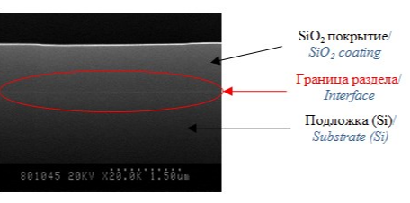
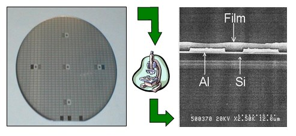

Подробнее
ЗОЛЬ-ГЕЛЬ ПОКРЫТИЯ И ПЛЁНКООБРАЗУЮЩИЕ РАСТВОРЫ НА ОСНОВЕ ДИОКСИДА КРЕМНИЯ ДЛЯ ПРИМЕНЕНИЯ В ТЕХНОЛОГИИ ПРОИЗВОДСТВА ИНТЕГРАЛЬНЫХ МИКРОСХЕМ

Предлагаются пленкообразующие растворы (золи) для формирования диэлектрических покрытий для планаризации поверхности и межслойной изоляции в технологии производства интегральных микросхем. Использование разработки позволит уменьшить зависимость от поставок импортных материалов и снизить затраты на производство интегральных микросхем и другой продукции более чем в 10-15 раз.
Область применения
Для планаризации поверхности и межслойной изоляции в технологии производства интегральных микросхем.
Основные преимущества
Золь наносится на материал методам напыления или центрифугирования.
Однородное прозрачное покрытие формируется после термообработки пи температуре 250-350 °С.
Хорошая адгезия к поверхности кремния, алюминия, кремниевых подложек с алюминиевой разводкой, стекла.
Механическая устойчивость к температурным колебаниям;
Изображение РЭМ-скола показывает, что диэлектрик имеет однослойную однородную структуру.
Гибкость и управляемость процесса.
Использование разработки позволит уменьшить зависимость от поставок импортных материалов и снизить затраты на производство интегральных микросхем и другой продукции более чем в 10-15 раз.

Технические характеристики
Обладает термической стойкостью (до Т = 450 °С);
Покрытие гомогенно по составу и толщине;
Толщина покрытия 0,2 - 0,7 мкм.;
Величина показателя преломления составляет 1,40 – 1,42, что близко к величине показателя для термического окисла, равного 1,42;
Величина диэлектрической проницаемости слоев находится в диапазоне 4.